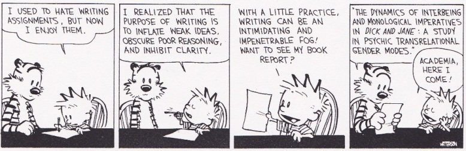

Scientists like Stephen Hawking and Neil Degrasse Tyson famously dismiss modern philosophy as obsolete. Philosophers are “would-be scientists without a laboratory.”
Quantum physics, expanding universe, each of which falls so far out of philosophy that the whole community of philosophers were rendered essentially obsolete. - Neil Degrasse Tyson
If you go to any school’s website they have a section “Why Study Philosophy?” They make arguments how studying philosophy has real practical benefits, such as helping you become a better thinker, to analyze problems logically, and to write and speak clearly. There are also arguments that philosophy has made advancements and contributed immensely to society.
These arguments are a form of information called “technically the truth.” The writers did not necessarily have bad intent, they are just trying to declare their relevancy in a world that fights against it.
As a young, 19 year old, I read a webpage like this at my undergraduate, which subsequently led to a series of events culminating in a B.A. in Philosophy. At the time, I was a lost college student who was just trying to find a purpose in life. Four years later, nothing has changed. It just feels like filled my head with weird things like Metaphysics and Epistemology. What usefulness could I provide to society?
The goal of Modern Philosophy is, you are supposed to ask questions, and think about big picture type of things. It is encouraged to ask questions, and expected to never arrive at the answers. Repeat to infinity. Like a while loop with no breaks or a division by zero.
If you look at the history, philosophy was not intended to be like this. To the Ancient Greeks, answers are just as important as questions. Life expectancy was too short to go down long paths, Memento Mori was their philosophy. To remember death, for we all must die.
Time was a gift. To the ancients, there was no hope that one day we could Neuralink our brains to the internet, or that one day scientists can learn how to extend our lifespan and eliminate aging. Death was always there, as inevitable as the changing of seasons and rotation of the earth.
Put simply, there was no time to fuss about with useless things. Philosophy was real, practical, and most importantly useful. With a great many scientific and military applications. The greatest students have had substantially enhanced capabilities of leadership and critical thinking, such as Alexander the Great and Marcus Aurelius.
And compare that to the tradition of today: Is true beauty subjective or objective? Do you honestly think, Alexander the Great, during his military conquests, ever thought to himself I wonder if a tree makes a sound if it falls in the forest.
*****
How did it travel so far from its ancient roots?
As with many systems, changes were a result of small, rational decisions, all of which made sense at the time. The problems are multi-factored.
Problem 1: Confirmation Bias
It is a trend you may have witnessed yourself: in general, the people to advocate the relevance of philosophy are usually students and learners of themselves.
This together with Sunk Cost Fallacy the tendency to rationalize your past decisions, because you’ve sunk so much of your time into it.
“This is the way it’s always been done” therefore “this is the way it has to be” Modern philosophy has gone down a road of stagnation in the face of changing times, while the world marched forward. Both the bias and its outcome of irrelevance are similar to the story of the Nokia phone company.
If your principles and thoughts are outdated, so too will be your outcomes.
Case 2: Science is a Self Correcting Process
Science rarely needs to defend itself. Virtually no one will challenge its power unless it steps over into the realm of another belief system. Its benefits to society speak for itself, in the words of Richard Dawkins, “it just works.”
You can think of many powerful modern scientists who add immense value to society. Stephen Hawking, Albert Einstein, Bill Nye, Carl Sagan, Neil Degrasse Tyson. Philosophers are a little bit more difficult to name, and certainly not elevated to the level of pop culture. Nick Bostrom([^1](#): Nick Bostrom: a philosopher who embraces science, and who’s simulation argument has successfully convinced the majority of scientific thinkers, using Bayesian Probability, we are likely to be living in a simulation.) is the closest we have to one.
What can refute science is better science, based on elimination of biases and reproducible experimentation. It’s an iterative process and it’s not perfect, but it does tend to produce results.
Case 3: Philosophy Should be Self-Correcting (but it’s not)
There have been many cases in history where people believed something, only have those beliefs thrown away with evidence and changing times. Freud for example, was once considered a pop-culture figure. His ideas were considered so crazy and wrong it motivated people to find a scientific explanation just to prove him wrong. Similar to the Stack Overflow Bias
Philosophy is supposed to have this self-correcting mechanism, but when traditions are set it becomes harder to change things. We should be able to disregard mediocre philosophy and cast out the irrelevant ones.
The Latin word for decision means “to cut off.” The same way Bruce Lee cast aside the irrelevant kick-punch techniques in favor of taking only the most effective. Or Marie Kondo, saving only your things which spark joy and showing respectful gratitude for what must go.
Modern philosophy is a hoarder, like a grandparent with boxes and boxes of clutter, refusing to throw anything away or even acknowledging there is a problem.
It is encouraged to ask all sorts of questions, but fail to ask the most relevant question of all: is this important? But no one wants to get kicked out of the classroom.
To be fair, this is not 100% the fault of philosophy, it’s a general issue that stretches to all undergraduate academia. Adaptive change is slow and iterative, widely dependent on each department. But this is opening up a can of worms that deserves another article in itself.
Case 4: Bad Writing
Look, I know I’m not Shakespeare, but I can tell bad writing the same way most people can tell a bad and good movie. Clarity vs. jargon: clear thoughts, clear mind. Academic writing has this habit of ejaculating words on paper then call it knowledge the same way Jackson Pollack splatters paint on a canvas and call it art.
And the tendency is to blame the user. You just don’t know enough about it, or our thoughts are too complicated for normal people to understand. And because people on the outside are not experts, this belief usually goes unchallenged.
It is the moment of non-construction, disclosing the absentation of actuality from the concept in part through its invitation to emphasize, in reading, the helplessness — rather than the will to power — of its fall into conceptuality. - Paul Fry, A Defense of Poetry
Things considered normal tend to stay the same. When you live in a bubble, you lose your sense of alternative perspective. If it is everywhere, the problem becomes invisible. This is not any one person’s fault, it’s systemic.

Case 5: Falsifiability
Reproducability and falsifiability are two central principles of science. This grounds their work into reality and makes sure that science is always working on something that is practical.
Falsifiability is one of the most important. Anyone can come up with a crazy conspiracy theory that is unfalsifiable.
Einstein is once quoted as saying “a million experiments can prove me right, but all you need is one experiment to prove me wrong.”
Contemporary philosophy just doesn’t hold this principle … theories continue to circle around questions that don’t have practical answers.
But Why?
A belief system is like a human, irrelevancy a form of death. When faced with a threat, it will fight to survive. And, just like humans, when faced with a threat, they must go through evolution or become extinct.
Philosophers are human, they want the same things everyone else does: job security, stability, etc. Each generation must maintain the appearance of doing something necessary, or face their collective extinction. Busywork, a type of pseudo-productivity. This is not a conscious choice, to live in a bubble means your eyes face inward and not out.
As a human race, we are facing some real, serious, threats… end of the world type of scenarios. Misinformation, fake news, anti-science… all of which are causing immense harm, and setting us back years, decades, perhaps even centuries of progress. Where are the truth-seekers? Modern philosophers are concerned more with themselves and their special questions without thought to the ones the world needs answers to.
Philosophy and science have had the same goal for millennia. Find the truth. Every victory of science should be a victory for philosophy.
Instead, modern philosophers are concerned more with defending themselves from arguments by scientists saying they are irrelevant. This is perceived as an attack, but scientists by nature tend to see observable, objective truths. If you have to defend yourself from the observations of scientists, you are probably not yourself seeing objectively…
If learning the truth is his goal, is to make himself an enemy of all that he reads, and attack it from every side. He should also suspect himself as he performs his critical examination of it, so that he may avoid falling into either prejudice or leniency. - Ibn al-Haytham, the First Scientist